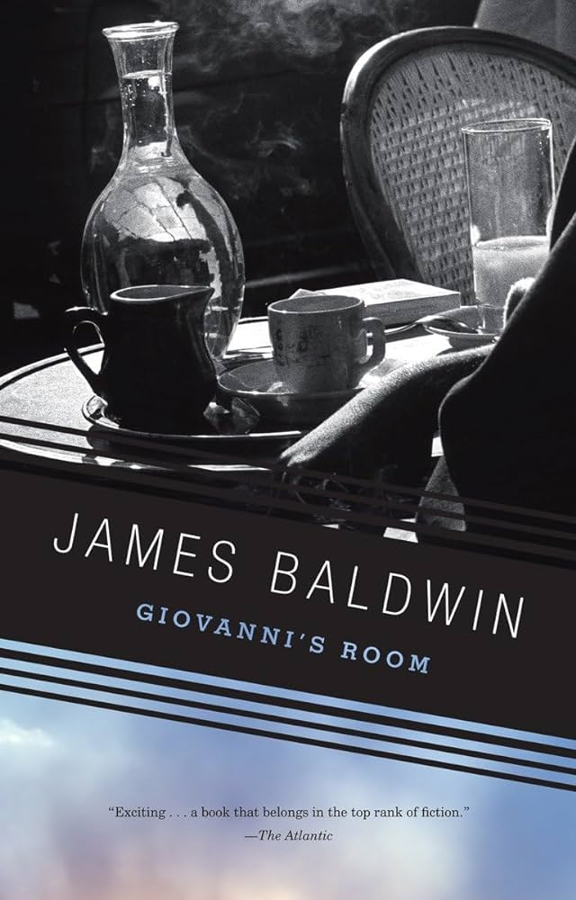
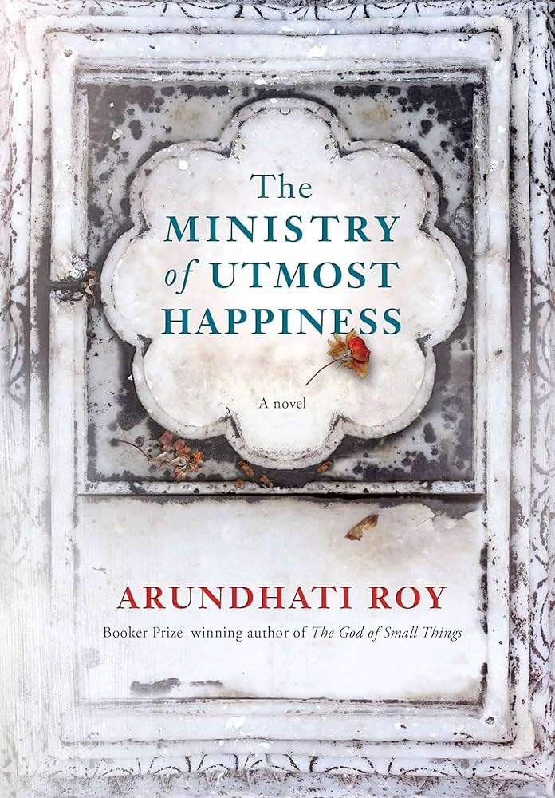

Giovanni's Room - James Baldwin
I want to read Giovanni’s Room because it places questions of identity and belonging in an
international context rather than a purely American one. Set largely in Paris and centered on expatriate life, the novel examines how distance from home can intensify questions of race, sexuality, and self-definition. I’m interested in how Baldwin uses a European setting to strip away
familiar social frameworks and expose the internal pressures that come with living between cultures and expectations.
When We Were Orphans - Kazuo Ishiguro
This book appeals to me for its expansive portrayal of modern India across regions, religions, and social classes.
I want to read it as a way of understanding how individual lives intersect with political conflict, caste, gender, and national identity.
Rather than offering a single narrative perspective, the novel moves across communities and margins, which makes it feel less like a
traditional story and more like a cultural map shaped by displacement, resistance, and survival..

The Ministry of Utmost Happiness - Arundhati Roy
I’m drawn to When We Were Orphans for how it navigates cultural dislocation between England and early-20th-century Shanghai.
The novel treats memory and identity as unstable, especially for characters shaped by colonial environments and divided loyalties.
I want to read it for its examination of how imperial history and personal narrative collide,
and how growing up between cultures can distort one’s understanding of home, responsibility, and truth.